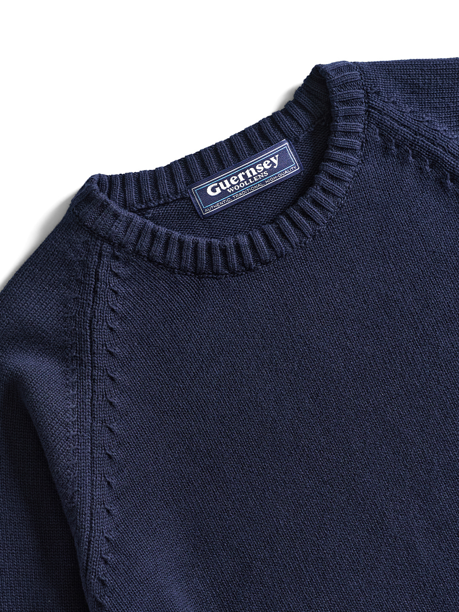
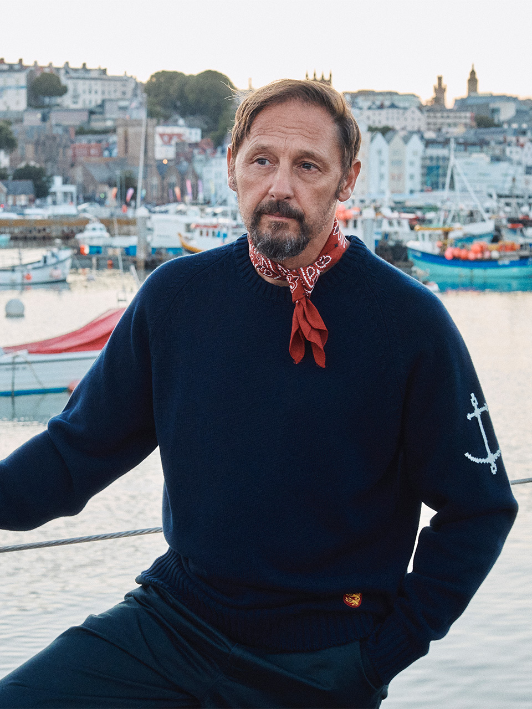
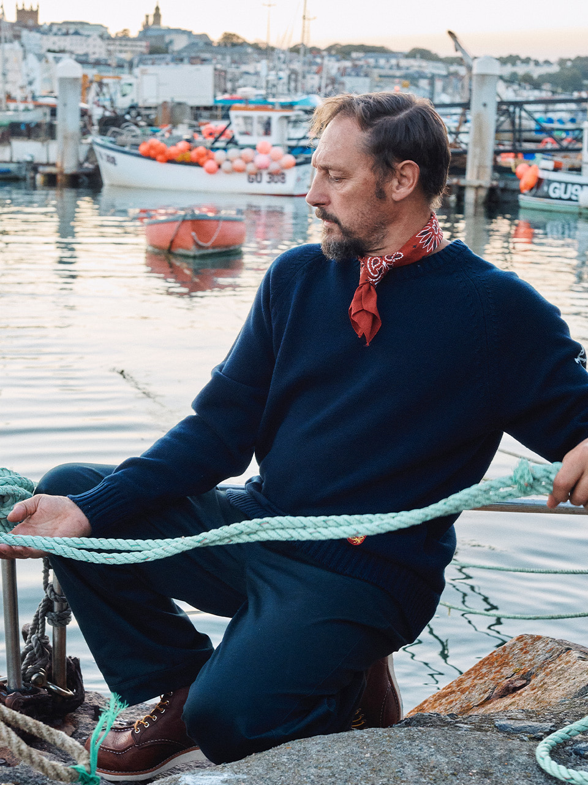
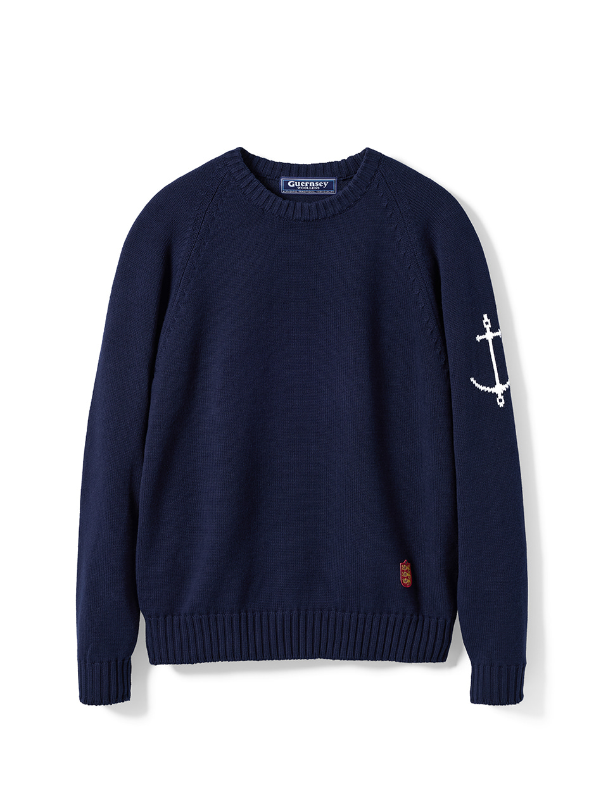
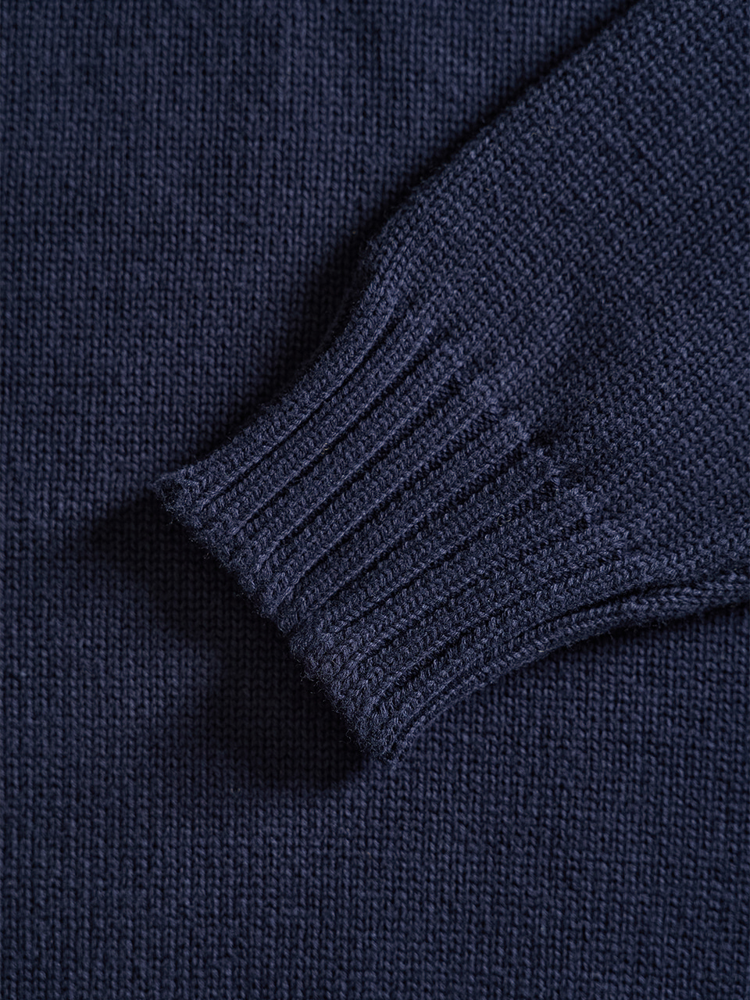

01 / RAGLAN
어깨를 따라 흐르는 선
움직임을 편안하게 받아들이는 나그랑 구조.
49°27′N · 2°32′W / GUERNSEY ISLAND
거친 바람을 견디던 어부의 스웨터에서 시작해, 오늘의 일상에 맞게 이어온 건지울른스의 코튼 나그랑 크루넥입니다.

섬의 역사에서 배운 구조
오래 입을수록 편안한 균형
장식보다 쓰임을 앞세운 디자인
Made on an island, built for the sea.
건지울른스는 1976년 영국 건지 섬에서 문을 열었습니다. 우리가 이어가는 것은 한 시대의 모양이 아니라, 필요한 옷을 정직하게 만들던 태도입니다.
17세기부터 섬의 어부들은 바람과 파도 속에서 몸을 보호하기 위해 촘촘한 스웨터를 입었습니다. 가족을 위해 바다로 나선 사람들의 실용성과 강인함은 지금도 나그랑 선과 견고한 마감 안에 남아 있습니다.
우리의 이야기 읽기

GW / 001GUERNSEY WOOLLENS
제품 정보를 불러오는 중입니다.
한 벌을 오래 입게 하는 것은 눈에 띄는 장식보다 구조와 마감입니다.

움직임을 편안하게 받아들이는 나그랑 구조.

단정한 표면과 안정적인 립 마감.
소매 위에 남긴 건지의 바다와 항해.
FIELD JOURNAL
옷의 배경을 알면 한 벌을 바라보는 시간이 달라집니다.
CONTACT / SEOUL · GUERNSEY
제품, 사이즈, 입고 일정과 협업 문의를 남겨주시면 확인 후 답변드리겠습니다.